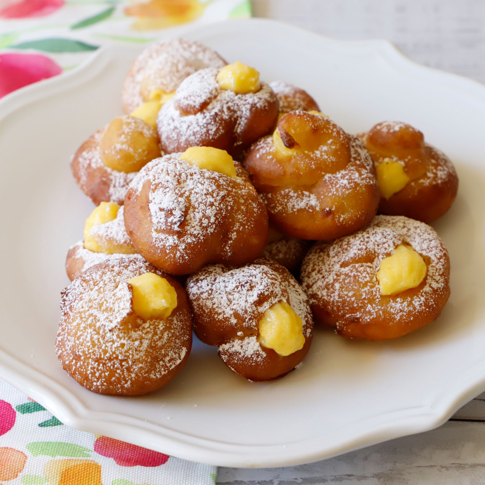
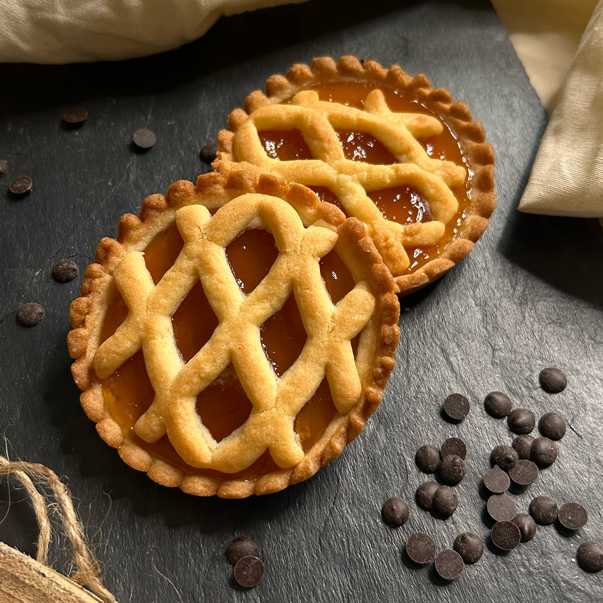
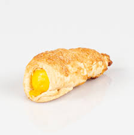
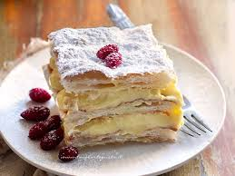
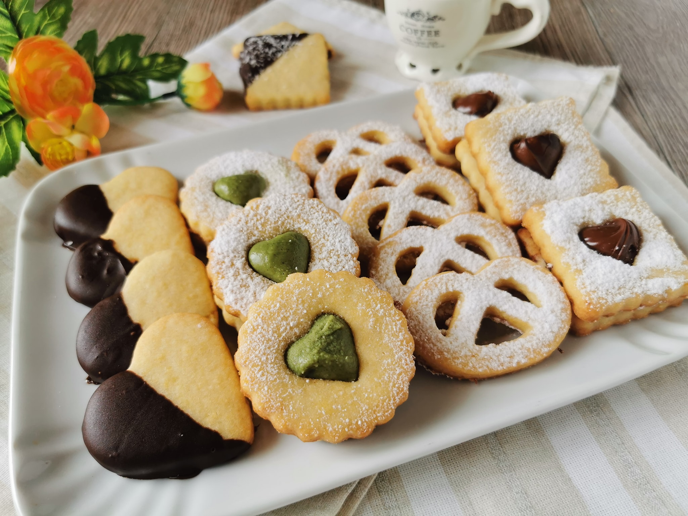

La Nostra Pasticceria
Ogni mattina creiamo piccole dolci magie nel nostro laboratorio artigianale.

Bignè Classici
Morbida pasta choux ripiena di vellutata crema pasticcera, zabaione o cioccolato belga.

Crostatine di Frutta
Guscio di frolla friabile con crema pasticcera e una cascata di frutta fresca di stagione.

Cannoli Mignon
Cialda croccante riempita con freschissima ricotta artigianale e gocce di cioccolato.

Millefoglie
Strati di sfoglia fragrante e leggerissima, alternati a golosa crema diplomatica.

Biscotteria Secca
Frollini da tè, cantucci della tradizione e paste da viaggio fatte come una volta.
Pasta Fresca
Pasta fresca fatta a mano ogni giorno, come vuole la tradizione.
| Specialità | Prezzo (al kg) |
|---|---|
| Agnolotti | € 21,00 |
| Cappelletti Tradizionali | € 21,00 |
| Cannelloni | € 21,00 |
| Passatelli | € 21,00 |
| Tagliatelle | € 13,00 |
| Lasagne | € 16,50 |
| Ravioli | € 16,00 |
| Ravioli con ricotta, spinaci e noci | € 18,00 |
| Gnocchi | € 13,00 |
| Spazle | € 15,00 |
* Per ordini superiori a 3kg è gradita la prenotazione con 24h di anticipo.
Torte su Ordinazione
Creazioni uniche nate per stupire. Realizziamo torte personalizzate per compleanni, anniversari, matrimoni ed eventi speciali.
Progetta la tua tortaLe Nostre Creazioni
Dalla cura per le materie prime alla precisione nel dettaglio: ogni nostro dolce racconta una storia di passione e artigianalità.
Sfoglia la nostra vetrina virtuale per vedere le torte e i prodotti realizzati nel nostro laboratorio.
Guarda la Galleria CompletaDicono di Noi
Le parole dei nostri clienti sono la nostra più grande soddisfazione.
"Ormai da due anni prendo le torte per i compleanni di tutta la famiglia, mi trovo benissimo. Sono creativi, gentilissimi e i dolci ecc!ezionali"
- Sara C.
"Non è da me fare recensioni ma per questo locale mi tocca....Farina del mio sacco non è una pasticceria ..ma la PASTICCERIA. Torte bellissime e BUONISSIME, secondo me insuperabili. Giovanna bravissima, gentilissima e super disponibile Consiglio a tutti di provare i loro prodotti rimarrete più che soddisfatti."
- Noemi M.
"Bar pasticceria mi sono fermato per un caffé. Il servizio nulla da dire . Il caffè buono. Ci tornerò per assaggiare la pasticceria."
- Alessandro